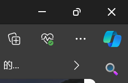
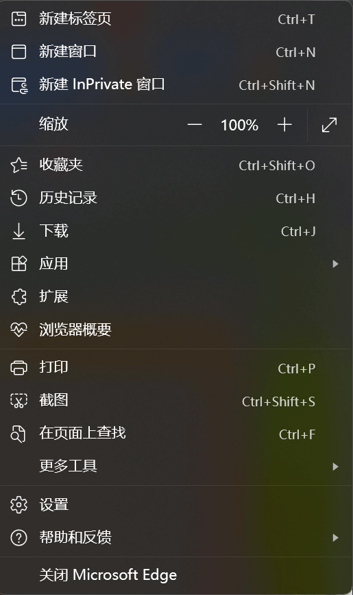
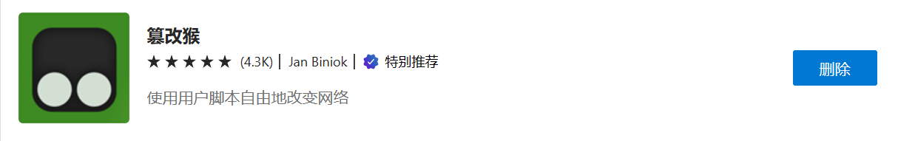

基于油猴的sep选课脚本安装使用
本人上学期有两门课因为找了半天课在哪没选到课（火大😤），决定写一个帮选的脚本（只是相当于ctrl+F），即在进入选课界面后立即选好所有要选的课程，只需填入验证码并提交
- 发布
- 阅读
- 03 分钟
- 语言
- ZH
本人上学期有两门课因为找了半天课在哪没选到课（火大😤），决定写一个帮选的脚本（只是相当于ctrl+F），即在进入选课界面后立即选好所有要选的课程，只需填入验证码并提交
下载油猴
油猴（Tampermonkey）是一个浏览器插件，可以用本地脚本修改被访问网页。
官网介绍
它允许用户自定义并增强您最喜爱的网页的功能。用户脚本是小型 JavaScript 程序，可用于向网页添加新功能或修改现有功能。使用 篡改猴，您可以轻松在任何网站上创建、管理和运行这些用户脚本。
例如，使用 篡改猴，您可以向网页添加一个新按钮，可以快速在社交媒体上分享链接，或自动填写带有个人信息的表格。在数字化时代，这特别有用，因为网页常常被用作访问广泛的服务和应用程序的用户界面。
1.edge浏览器方法
点击右上角的三个点，选择 扩展 ，点击 管理扩展


然后划到最底下，点击 获取 Microsoft Edge 扩展，在搜索框里搜索 Tampermonkey
找到下面这个就是（我的已经下载过了）

下载好后在浏览器导航栏点击扩展小图标，让它在工具栏里显示

2.其他浏览器
可以参考下面这几篇文章
安装并使用选课脚本
点击导航栏上的小图标，点击添加新脚本，把原有默认的所有代码都删掉，将下面代码复制粘贴进去并保存
// ==UserScript==
// @name sep选课助手
// @namespace https://gitee.com/dx3906999
// @version 2024-02-06
// @description sep自动选择想选课程
// @author dx3906999
// @match https://xkcts.ucas.ac.cn/courseManageBachelor/selectCourse*
// @icon data:image/gif;base64,R0lGODlhAQABAAAAACH5BAEKAAEALAAAAAABAAEAAAICTAEAOw==
// @grant none
// ==/UserScript==
(function() {
'use strict';
var class_checkbox_elements=document.getElementsByName("sids");
var class_ids=new Array();
for (var i=0;i<class_checkbox_elements.length;i++){
class_ids[i]=class_checkbox_elements[i].value;
};
var class_codes=new Array();
for (var j=0;j<class_checkbox_elements.length;j++){
class_codes[j]=document.getElementById("courseCode_"+class_ids[j]).textContent;
}
var sep_helper_str="B02GB003Y-03"//改成课程编号，格式是课程编号中间用空格连接
/*例子:
var sep_helper_str="B02GB003Y-04 B02GB003Y-03 B02GB003Y-05"
*/
var classes_selected=sep_helper_str.split(" ");
var class_index;
for (var k=0;k<classes_selected.length;k++){
class_index=class_codes.indexOf(classes_selected[k]);
if (class_index!=-1) {
class_checkbox_elements[class_index].checked=true;
}
}
})();
使用时按中间那项说明修改代码即可